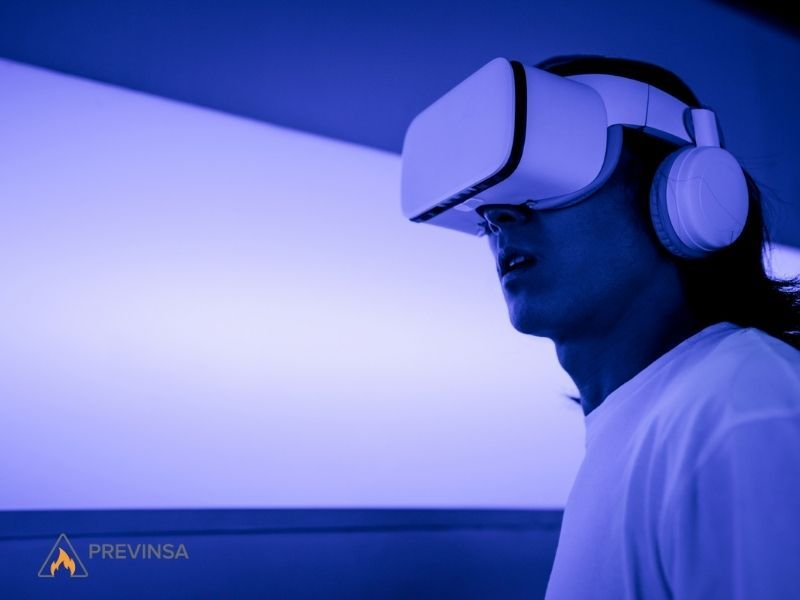

¿Qué es la realidad virtual y aumentada?
La realidad virtual (VR) crea un entorno completamente digital en el que la persona se sumerge usando unas gafas o un casco especial.
La realidad aumentada (AR) no reemplaza el mundo real: agrega imágenes, textos o modelos 3D sobre lo que la persona ya está viendo, por ejemplo a través de la cámara de un celular.
Ambas tecnologías buscan que la experiencia con lo digital sea más natural, interactiva y fácil de entender.

Aplicaciones actuales
Hoy la realidad virtual y aumentada se usan en distintas áreas. Estos son algunos ejemplos:
- Educación
- Industria
- Salud
- Entretenimiento
| Aspecto | Descripción | Ejemplo |
|---|---|---|
| Educación | Permite aprender de forma más visual y práctica | Recorridos virtuales por museos y laboratorios virtuales |
| Industria | Ayuda a capacitar empleados y a reparar equipos | Instrucciones de mantenimiento sobre una máquina real |
| Salud | Apoya la formación médica y la rehabilitación | Simuladores de cirugía y terapias de rehabilitación |
| Entretenimiento | Ofrece experiencias más inmersivas e interactivas | Videojuegos de realidad virtual y juegos de AR en celular |
Para ver otro tema del sitio, visita la página del Tema 2.